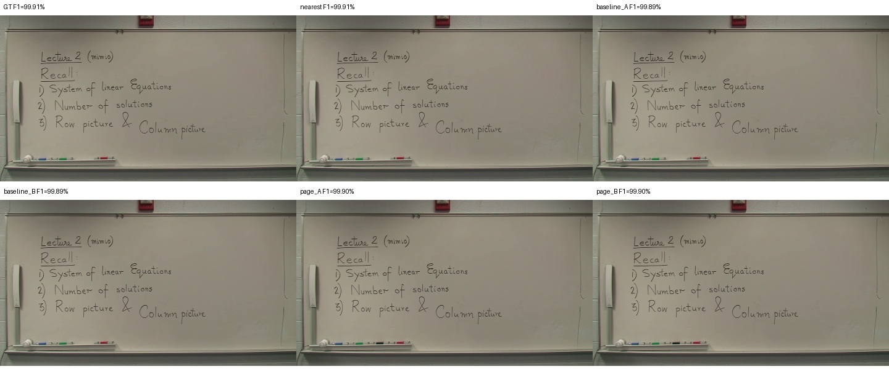
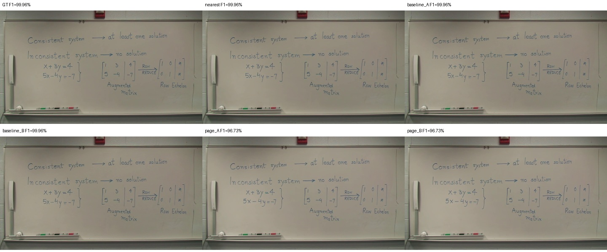
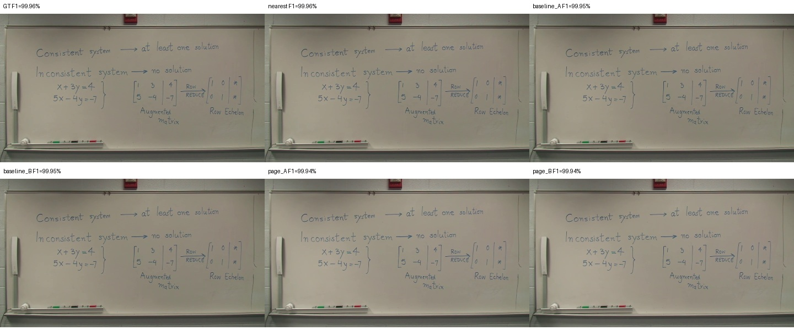
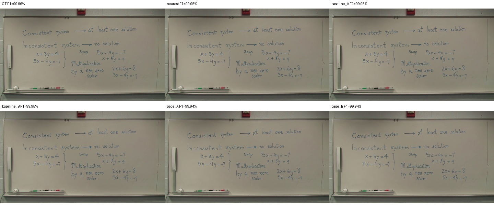
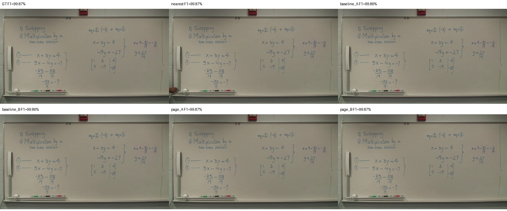
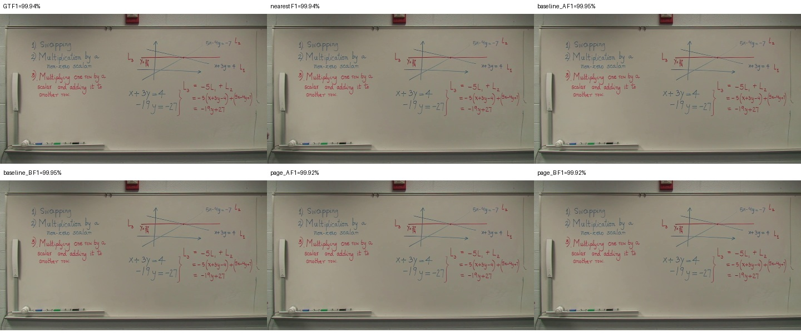
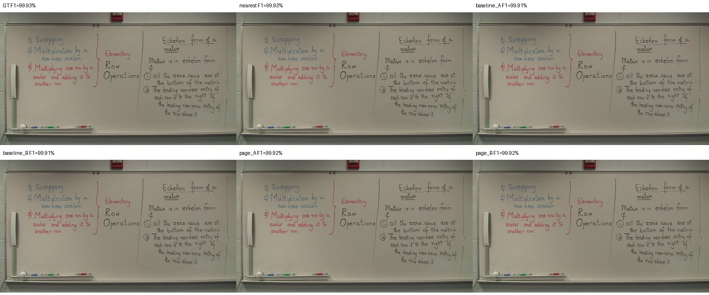
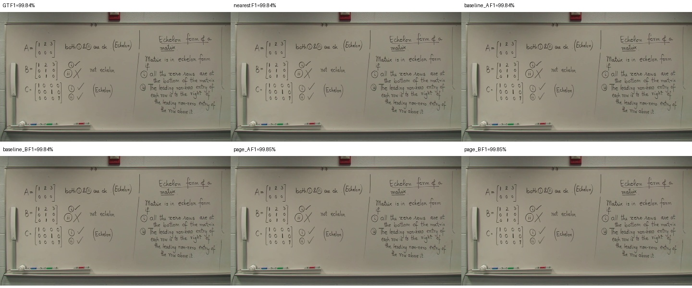
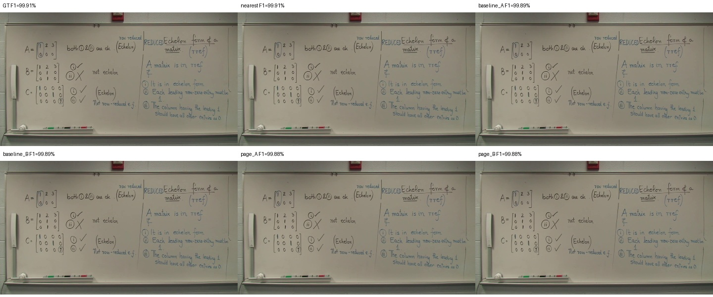

GT 1488.187초 · p00010 · 선택 1488.487초

기존 644개 중간 상태 → 누적 판서 15개. A는 원본 픽셀만 사용합니다. 페이지 B가 있으면 실제 결과를 비교하며, 원본 유지와 합성은 JSON의 상태·사유로 구분합니다.
| 출력 | Recall | Precision | F1 |
|---|---|---|---|
| GT | 99.99% | 99.85% | 99.92% |
| nearest | 100.00% | 99.84% | 99.92% |
| baseline_A | 100.00% | 99.83% | 99.91% |
| baseline_B | 100.00% | 99.83% | 99.91% |
| previous_micro_A | 99.99% | 99.83% | 99.91% |
| page_A | 99.71% | 99.47% | 99.59% |
| page_B | 99.71% | 99.47% | 99.59% |
기존 이진화·회수율·정밀도·F1 계산을 그대로 사용했습니다. 완성 판서는 GT 스냅샷 이후의 추가 필기를 포함할 수 있습니다. GT는 평가에만 사용했습니다.









확인된 최종 판서 노출 추정 71.5% · 경계 confirmed_erasure_or_revision · 품질 표시 ['complete_original_not_observed', 'foreground_present_original_used']

확인된 최종 판서 노출 추정 83.6% · 경계 confirmed_erasure_or_revision · 품질 표시 ['complete_original_not_observed']

확인된 최종 판서 노출 추정 72.6% · 경계 confirmed_erasure_or_revision · 품질 표시 ['complete_original_not_observed']

확인된 최종 판서 노출 추정 66.6% · 경계 confirmed_erasure_or_revision · 품질 표시 ['complete_original_not_observed']

확인된 최종 판서 노출 추정 68.9% · 경계 confirmed_erasure_or_revision · 품질 표시 ['complete_original_not_observed']

확인된 최종 판서 노출 추정 97.9% · 경계 confirmed_erasure_or_revision · 품질 표시 []

확인된 최종 판서 노출 추정 91.6% · 경계 confirmed_erasure_or_revision · 품질 표시 ['complete_original_not_observed']

확인된 최종 판서 노출 추정 99.1% · 경계 confirmed_erasure_or_revision · 품질 표시 []

확인된 최종 판서 노출 추정 84.5% · 경계 confirmed_erasure_or_revision · 품질 표시 ['complete_original_not_observed', 'foreground_present_original_used']

확인된 최종 판서 노출 추정 99.2% · 경계 confirmed_erasure_or_revision · 품질 표시 []

확인된 최종 판서 노출 추정 97.3% · 경계 confirmed_erasure_or_revision · 품질 표시 []

확인된 최종 판서 노출 추정 99.2% · 경계 confirmed_erasure_or_revision · 품질 표시 ['terminal_content_uncertain']

확인된 최종 판서 노출 추정 99.4% · 경계 confirmed_erasure_or_revision · 품질 표시 ['terminal_content_uncertain']

확인된 최종 판서 노출 추정 99.4% · 경계 confirmed_erasure_or_revision · 품질 표시 ['terminal_content_uncertain']

확인된 최종 판서 노출 추정 99.5% · 경계 end_of_video · 품질 표시 []